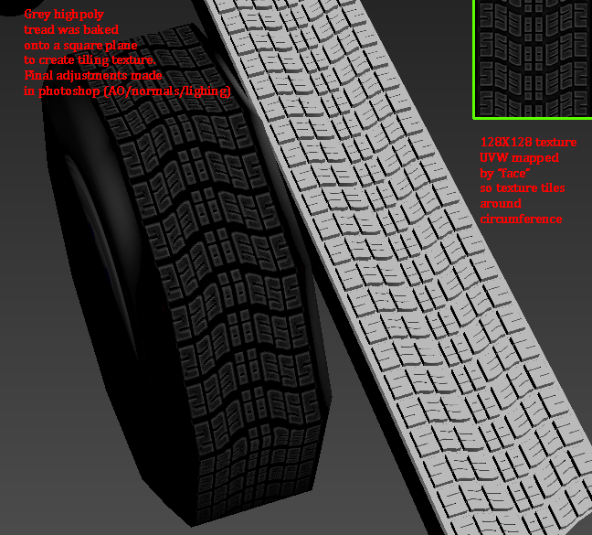

Here is a test I made on GoldSrc model creation using methods normally used for modern engines. Basically its the same as usual highpoly-to-lowpoly texture baking only everything is combined into a single 8-bit BMP. I took the normal map bake and turned it into cavity maps using xnormal plugin for lighting adjustments/masks in photoshop. In some situations you can use the B&W green channel of the normal map to add a top-down shadow effect.
A technical hurdle was dealing with was how to tile a texture for the tread but do it without UVW tiling. A limitation of GoldSrc models is that they do not support tiling off the UV space , so what I had to do is use the UVW “Face” unwrap method so each polygon around the circumference of the tire is planar mapped to one 128X128 texture. Now I have a tiling texture so I don’t have to use a wasteful whole unfold unwrap and large long texture; and I can get around the off-grid limit this way.
Last image is a physbaked animation. Final model is 76 polygons per tire.
GoldSRC in 2016, it’s great to see!